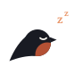

Everything it does.
Hummle is being built to do a handful of jobs extremely well: read to you, sound like the story, and never get a word wrong. Items marked Later come after the first version.
the full list, no fine print
Listening
Press Play and follow along. Everything else stays out of your way.
- Read alongThe sentence being read is highlighted, and the page scrolls with you.
- Jump anywhereClick any sentence to start from there. Scroll away and Hummle waits.
- Speed without chipmunksFrom 0.75× to 2×, with the voice’s pitch kept natural.
- Sleep timerDrift off mid-chapter; it stops when you ask it to.
- Remembers your placeIn every chapter, article and draft, separately.
- Listen now or prepareStarts within seconds, or prepares a long chapter first and tells you when it’s ready.

In your browser
A small extension for Chrome and Edge that hands the page to Hummle.
- Read this pageOne click pulls out the story or article and starts reading. Menus, ads and comments stay out.
- Read a selectionHighlight a few lines and hear just those.
- Check before it readsSee the first and last lines it found, so nothing gets missed.
- Add the next chapterOpen the next chapter yourself, click once, and it joins the same book. Hummle never crawls a site.
- Only when you clickThe extension wakes up when you use it, and never reads forms or passwords.
- Rules per siteSkip author’s notes on one site and read them on another. Hummle remembers.
Performance
Voices that act out the scene without you typing a single direction.
- Reads the roomWho is speaking, to whom, and what just happened shape how each line sounds.
- ExpressionSubtle, Natural or Dramatic: choose how much feeling you want.
- Real vocal soundsLaughs, sighs, gasps, groans, crying and more, in the voice itself.
- Thoughts, shouts, phone callsInner thoughts sound close, shouting sounds urgent, a phone call sounds like a phone.
- Stays itselfA voice keeps who it is from the first page to the last, whatever the mood.
- Asks when unsureSarcasm or a mystery speaker? The line gets a small mark and two or three options.
Sound
Effects that belong to the story, mixed the way you like.
- System-message chimesLevel-ups, skills, quests and warnings each get their own short sound.
- Story effectsA knock, a slammed door, thunder: placed on the words they belong to.
- Your own mixerVoice, voice sounds, effects, chimes and ambience each have a slider and a switch.
- Scene ambienceRain, a crowded tavern, a quiet room, carried smoothly across a whole scene.Later
Writing and fixing
The Studio, for your own drafts and for perfecting any line.
- Paste and playNo project to set up. It saves your draft as you go.
- Change one line, redo one lineEdit a paragraph and only that part is made again, joined smoothly.
- Fix in two clicksClick a line, choose “less”, “no sound here” or another emotion. The fix sticks for the rest of the book.
- TakesCompare versions of a line and keep your favourite; approved takes are protected.
- Names said rightSet how a name sounds once and it’s used everywhere. Pronunciation lists import and export.
- Numbers, dates, abbreviations“3 May”, “1,204” and “St. Mary’s Street” read the way a person would say them.
Checks
Hummle listens back to itself, so you don’t have to.
- Every word, checkedEach line is compared with the page. Skipped or invented words are caught and redone.
- Voice checkEach line is checked to make sure the voice still sounds like itself.
- Clear labelsEvery take shows “All words checked” or exactly what needs a look.
- Recovers from crashesDrafts and half-finished chapters survive a restart.

Library and export
Your listening, kept where you want it.
- A library you ownDrafts, chapters and takes live in a folder you choose, searchable by title.
- Save as audioHigh-quality WAV or FLAC, at an even volume.
- Audiobooks for your phoneMP3 or M4B files with chapter marks.Later
- Whole books overnightPrepare a book while you sleep; it picks up where it left off after a restart.Later
- Projects and castingChapters, a narrator and a different voice for each character if you want one.Later
- A proper desktop appTray icon, start with Windows, clean install and uninstall.Later
Further out
Once English is excellent, these come next.
- More voices, all the time: new ages, accents and characters.
- Other languages, and translating as it reads.
- Phones, and browsers beyond Chrome and Edge.